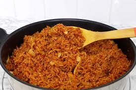

Recipe for Nigerian Jollof!!!
Nigerian Jollof is a one-pot rice dish cooked in a rich, spicy tomato base.
It’s known for its smoky, deep flavor, vibrant red-orange color, and the way each grain is infused with
sauce.
This will capture everything you need to know about creating a proper spicy Nigerian jollof,
from the recipe, to the step by step breakdown of how to make it.
Recipe Details
Recipe Information
- Preparation Time: 10-15min
- Cooking Time: 40 minute
- Number of Servings: 2-3 persons
- Difficulty Level: Beginner

Ingredients
- 3 cups of long-grain parboiled rice
- 2/4 cup of vegetable oil
- 2 tablespoons of tomato paste
- 1 teaspoon of thyme
- 1 teaspoon of curry powder
- Salt to taste
- Seasoning of choice
- 4 cups of chicken or vegetable broth
- 1 cup of mixed vegetables (carrots, peas, bell peppers)
- Tomato base: 3-5 pieces of tomato
- 3-5 pieces of cayenne pepper
- Habanero pepper, use to your spice tolerance
- 1 large onion, chopped
- 2 cloves of garlic, minced
- 1/2 of ginger
Instructions
- For the Base
- Wash and roughly chop your tomatoes, pepper and onion
- Spread them on a baking tray lined with foil or parchment paper.
- Drizzle lightly with vegetable oil and sprinkle a pinch of salt
- Roast for 20 minutes on the oven set to 200°C (about 390°F).
- Rinse the rice under warm water until the water runs clear.
- In a large pot, heat the vegetable oil over medium heat.
- Add onion, garlic, curry and thym and cook for half a minute.
- Add the blended tomato, tomato paste, and cook for 5-7 minutes, stiring at intervals until its so
cooked its
almost burning.
- Add the rinsed rice and stir to coat with the tomato mixture.
- Pour in the chicken or vegetable broth and bring to a boil.
- Reduce heat to low, cover, and simmer for 20-25 minutes or until rice is cooked.
- Stir in mixed vegetables and a little cooking butter and cook for an additional 5 minutes on very
low heat.
- Fluff the rice with a fork before serving.
If you followed the instructions listed above, your jollof should look something like this
👇

Nutrition Facts
- Calories: 250–300 kcal
- Carbohydrates: 45–50 g
- Protein: 4–6 g
- Fiber: 2–3 g
Tips: Your choice of rice matter, it determines your cook time and the quantity of water
reqired to cook your rice.
So ensure that you put that into consideration when cooking.
For more on Nigerian jollof, check out this detailed blog by Dash of Jazz Nigerian Jollof Rice Recipe